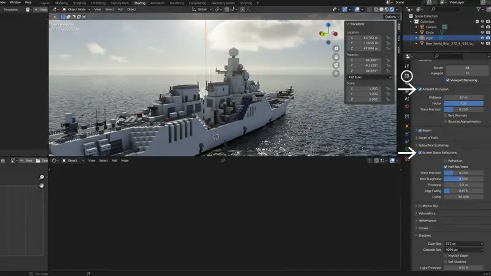

blenderで海を作るならオーシャンモディファイアを使うのが一般的ですが、ベイク前提の機能ということもありとっつきにくい感があります。 私が作りたかったのは、果てしなく広がる波の無い大海原。しかも静止画。これはオーシャンモディファイアが想定する利用シーンではないのでは？と思い始めました。
そこで、ノイズテクスチャを利用した簡易的な海を、そこそこ綺麗に作れないかと試行錯誤したのでご紹介します。海だけでなく、船を綺麗に撮る方法も少し紹介しています。eevee、cycles両方いけます。
タイトルに（静止画向け）と書いてありますが、この方法は波を動かすのが難しいのです。何か良い方法をご存じの方がおられたら教えていただきたいです。
概念の説明
{kind=link}
この海は、平らな円盤の上に、ノイズから生成した波を張り付けて作っています。バンプマッピングやノーマル（法線）マッピングといった言葉をマイクラの影MODの設定で見かけたことがあるのではないでしょうか。 あれと同じです。波は凹凸しているように見えますが、表面の形状を直接変えるわけではないのですね。
また、3DCG特有の概念もひとつ知っておかなくてはいけません。 オブジェクトには、その質感を決めるために一つ以上のマテリアルが必要です（なければ毒々しいピンク色になります）。その中に、波を作り上げていくわけです。
本題
円盤の用意
巨大な円盤を作成し、海面に見立てます。
まずblenderを開くと、いつもの立方体があります。これはxキーで消しておきます。
shift+aでmeshの追加を選び、更にcircleを選びます。すると、輪っかが出現すると同時に画面左下にメニュー（『最後の操作を調整』メニュー）が出てくるので、これをクリックします。 Fill Typeがnothingになっていると思うので、これをTriangle Fanに変更しておきます。これでやっと、海面を作れたということですね。 さらに、上のRadiusを大きな数値（1000mくらい）に変更し、あなたの納得できる広さの海を作ってください。

ここで、海の広さを確認しようとズームアウトしていくと、 表示がおかしいことに気づくかもしれません。これは、ビューポートに表示される範囲が制限されているからです。 そんな時は、マウスカーソルをビューポート上において、Nキーを押下しましょう。サイドバーが表示されます。 サイドバーのViewタブの中の、Clip Start/EndのEndの方に0をひとつ付け足します。するとちゃんと表示されたのではありませんか？ 次はいよいよこの円盤に波を立たせますよ。
{kind=link}
波を作る
円盤にマテリアルを追加し、波っぽい見た目にします。
ウィンドウの一番上を見ると、現在は"Layout"タブに居るのがわかるでしょうか。これを"Shading"タブに切り替えます。 すると画面下にノードエディターが現れるので、ここでノードを組んでいきます。うわっ、出たよ。ノード。
改めて、円盤が選択されていることを確認してください。次に、+Newというボタンを押したくなりますが、その気持ちは抑えて左の球体マークの中からMaterialを選びます。 そう、最初からサンプルのマテリアルが用意されているのです。
Principled BSDF のベースカラーを黒に、Roughness（粗さ）を0にします。すると鏡のように景色が反射します。
{kind=link}
ちなみに、右上の円が四つ並んでいるところ（ビューポートシェーディング）の右の下三角 をクリックすると、背景を選択できます。青空のものにしておくと海っぽくなりますよ。
{kind=link}
次は早速、波の元となるノイズテクスチャを生成します。ノードエディター上でshift+aを押し、Noise Texture というノードを追加してください。 今回、海が非常に広いので、ノイズテクスチャの"Scale"の値を500から700程度に設定しておいてください。 早速、このノイズテクスチャノードの"color"を、Principled BSDF の下の方にある"normal（法線）"に繋いでみてください。
{kind=link}
かなり海っぽくなっていますが、トップの画像と比べてみたください。なんか違いますね。この使い方は間違っています。ノイズテクスチャの後に、bumpノードを追加しなければなりません。 （ノイズテクスチャを直接ノーマルマップとして使用するより、ハイトマップとしてそれをノーマルに変換する方が綺麗になるからです。）
bumpノードを間に持っていき、ノイズテクスチャノードの"color"から"bump"の"height"に、"bump"の"normal"から"P.BSDF"の"normal"に繋ぎます。これで、海と言って差し支えないものが完成です。
{kind=link}
更に綺麗な波にするには？
より綺麗で現実的な波にするために、細かい設定を弄っていきます。まず、ノイズテクスチャノードの"Detail"を6に上げます。すると海面に寄って行ったときに細かい波増えているのがわかります。 次にBumpノードの"Distance"を2くらいに上げます。これは遠巻きに見たときの波のくっきりさが変わりますが、上げ過ぎると不自然なのでお好みで調節してください。
{kind=link}
レンダリング準備
背景の設定
まず、背景の設定です。画面右上の球体が四つ並んでいる中の一番右を選択してレンダーモードにしておきます。 これがレンダリング結果になるのですが、背景が無くなり真っ暗になったのではないでしょうか。今回は背景を作るために環境テクスチャを利用しますので、まずは背景となる画像を用意しなければなりません。 画像は以下のWebサイトから入手しました。地球儀のタブを開いて、colorの横の点をクリックし、Environmental Texture（環境テクスチャ）を選択します。 すると、その下にOpen（フォルダを開く）が出現するので、先ほどダウンロードした画像を選択します。すると、空が現れます。
環境テクスチャ入手先です。今回は4k, HDRを使用しました。polyhaven.com/a/table_mountain_1_puresky

カメラの設定
次にカメラの設定です。画面右上のアウトライナーからカメラを選びます。すると、プロパティにフィルムカメラアイコンのタブが出現しますのでクリックします。Lensの中のClip Start/ EndのEndに0を一つ追加します。
{kind=link}
雰囲気の設定
霧の追加とBloomを有効にします。
霧を追加するには、アイコンが縦に並んでいるところのピンクの地球儀（ワールドプロパティ）をクリックして、Volumeを開くとVolumeの欄がnoneになっていると思うので、 ここをクリックして"Volume Scatter（ボリュームの散乱）"を選択します。 すると空が黒くなると思うので、Density（密度）を0.001くらいにして調節してください。
{kind=link}
セットで霧が発生する範囲を設定します。アイコンが縦に並んでいるところのカメラ（オブジェクトデータプロパティ）をクリックしてVolumetricsのStartを100mくらいに、Endを1000mくらいに設定します。
同じくレンダープロパティの"Bloom"の項目にもチェックを入れて置きます。bloomは光が当たっている部分がぼわっと広がる表現で、逆光下で大きく印象が変わります。
{kind=link}
ここまで完了したら、カメラの向きを調節してレンダリングしてみましょう。
カメラを動かすには、まずカメラオブジェクトを選択してから、Gキーで動かしRキーで回転させるか、サイドバーのLocation Rotationの数値上をマウスで左右にドラッグします。 F12キーを押してレンダリングします。
こんな感じになっていたら成功です。
{kind=link}
被写体を置く場合の注意
トップの画像ではマインクラフトの作品を被写体として撮影していますが、このように被写体を置く場合は更に綺麗に撮る工夫が必要です。
レンダリングエンジンにcyclesを使用するなら特別に弄らなくとも綺麗になると思いますが、eevee の場合はコツが必要です。
{kind=link}
影
マインクラフトの作品をインポートして撮影してみましたが、ノッペリした感じになってしまっていますね。 eevee では影を作るために別途光源を設置する必要があります。ライトオブジェクトを選択して、電球アイコンの中の光源の種類を太陽に、強さを5から10程度に、そしてShadowにチェックを入れます。
{kind=link}
もう一つ、重要な項目があります。レンダープロパティに戻り、アンビエントオクルージョンとスクリーンスペースリフレクションにチェックを入れます。
アンビエントオクルージョンは距離を10mに、Factor（係数）を2に、Bounces Approximation（バウンスを近似）のチェックを外すとかなり濃い目の隙間影が出ます。
{kind=link}
反射
スクリーンスペースリフレクションはその名の通り、海面に船体が反射します。簡易的な計算ですので不正確な部分も多いのですが、あるのとないのとでは大違いです。
そしてレンダリングしたのがこちら。だいぶマシになりました。
{kind=link}
発展
今回は静止画を撮る方法でしたが、オーシャンモディファイアをベイクすれば動く波も作れます。
【blender】海洋モディファイア（Ocean Modifier）を用いた海（動画向け）また、こちらでは反射する床の上で作品を撮影する方法を紹介しています。
【blender】マインクラフトの作品をblenderで撮影する手順【eevee篇】